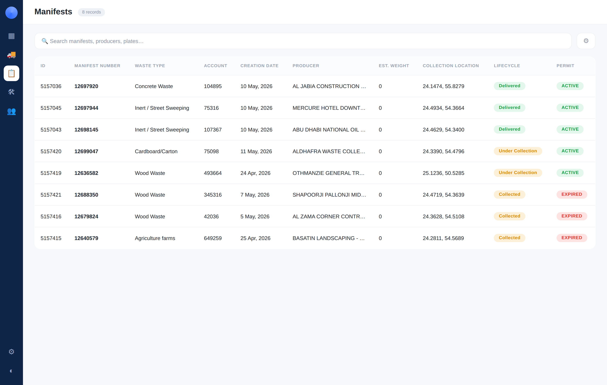
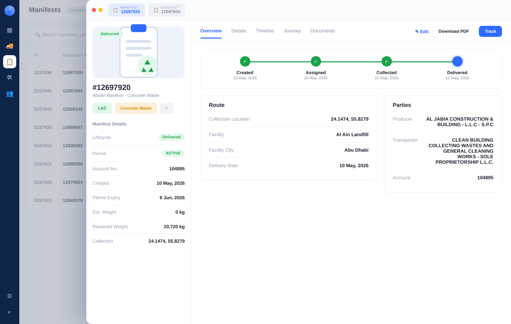
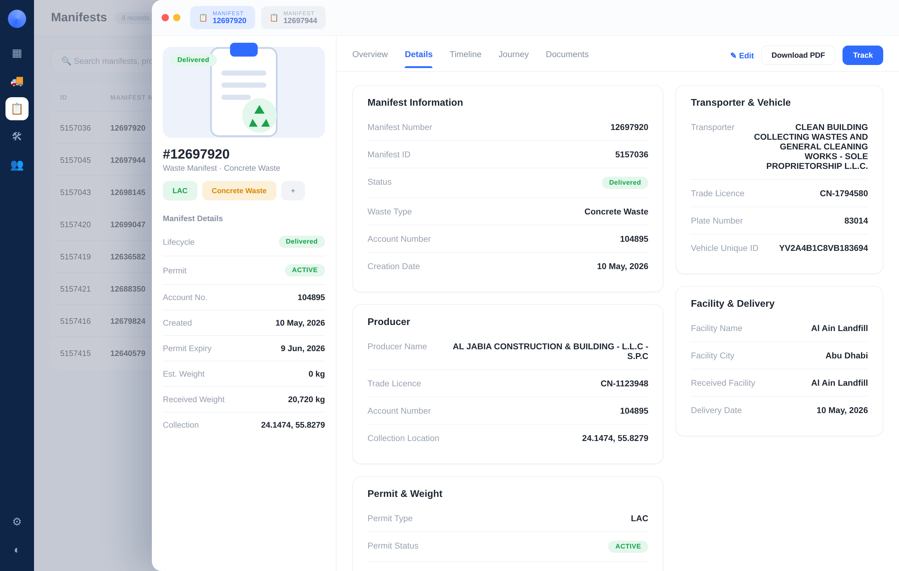
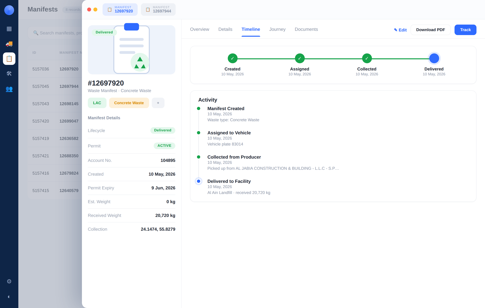
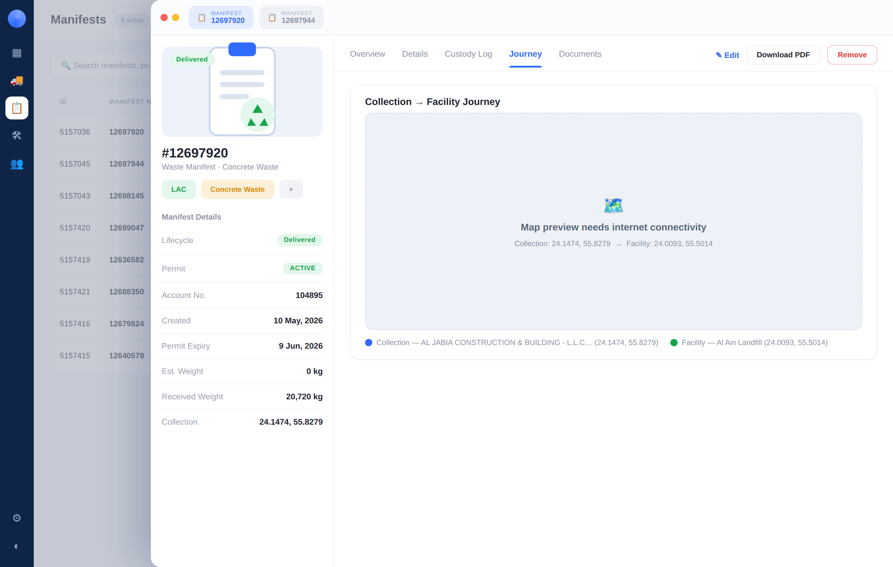
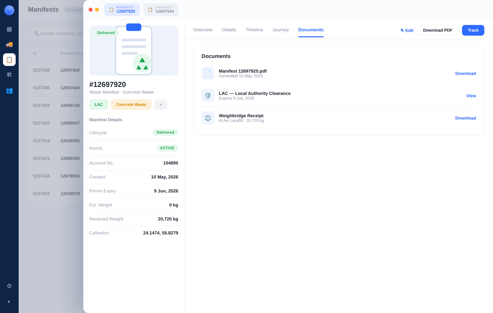
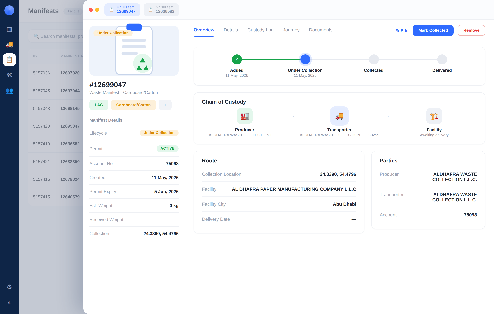
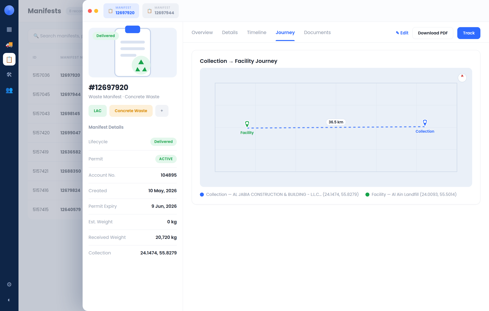
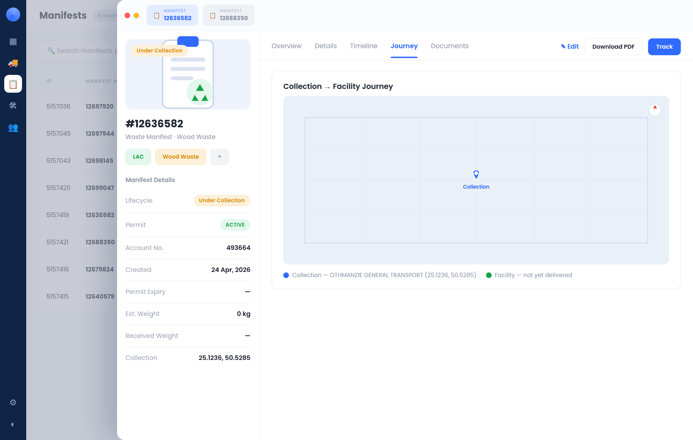

Manifests list
A standalone manifest entity list (no longer nested in the vehicle profile). Each row opens that manifest's profile.

Manifest profile · Overview
Manifest #12697920. Left: the manifest hero card with status, tags and key details. Right: lifecycle stepper + Route & Parties summary.

Manifest profile · Details
Full section cards: Manifest Information, Producer, Permit & Weight, Transporter & Vehicle, Facility & Delivery.

Manifest profile · Timeline
Lifecycle stepper plus a chronological activity feed.

Manifest profile · Journey
Collection → Facility map. (Offline fallback shown here; renders a live Leaflet map with internet.)

Manifest profile · Documents
Manifest PDF, permit (LAC) and weighbridge receipt for delivered manifests.

Under Collection state
Manifest #12699047 — amber lifecycle, delivery still pending.

Offline build · Journey (manifest-offline.html)
A single fully self-contained file (font inlined, no CDNs). The journey map is a vector render — collection & facility pins, route and distance — so it works with zero network. Verified: 0 external requests.

Offline build · single-point manifest
A manifest not yet delivered shows just the collection point.
